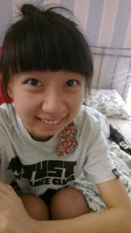
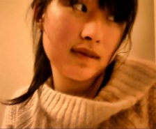
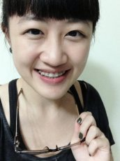
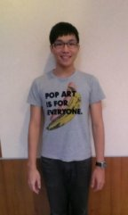
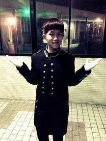
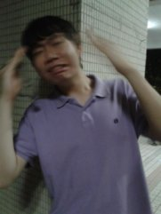
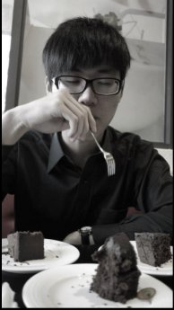
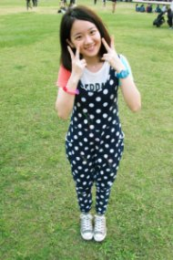
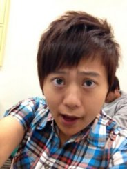
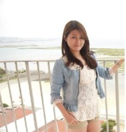

管理不分系 二年級 許瓊文
嗨你好我是許瓊文今年20
我好喜歡唱歌!
我是小六參加合唱團的時候發現我這輩子最愛做的事
情就是唱歌的
你喜歡我唱歌嗎?
四工設五甲 吳凡
大家好，我是吳凡
是一個很平凡的人，生活和大家一樣，
喜歡彈吉他 唱歌 創作 聊天 出去玩 攝影
希望大家能夠一起交流唷!
四外語一 謝惠雯
:)大家好!我是克萊兒~
我最愛唱歌囉!大家快跟我一起開心唱歌吧!!
四企三甲 吳昀倩
從小就愛唱歌，隨時隨地都在哼哼唱唱，不管
是走路的時候、洗澡的時候、等公車的時候
…是一個很愛唱歌的女生，希望能夠在舞台上
好好唱完一首歌分享給大家。
四外語一 羅宇涵
哈囉大家好，我是四外語一的羅宇涵。希望大家會喜歡!!
四電機二甲 謝婕妤
意外進了決賽，不管比賽結果如何，我只想好好體驗一下站在台上唱歌的感覺，我就是來表演的請大家好好聽我唱歌吧!
四化工三甲 諶宥銨
大家好，我是宥銨，是個愛唱歌的路人。
我喜歡唱歌，我在歌聲中遇見了最單純的自己，以及最直白的心情。
四創設一 吳順涵
一直就很喜歡哼哼唱唱，能用音樂填滿生活，非常幸福，比賽名次不是重點，重點是一個開心唱歌的感覺
四企管三甲 張家泓
就是想唱歌，就是愛音樂。像個年幼的孩童，拿著顆籃球，甚麼都不管，只需要開心的笑。
二外語三 江韋儀
大家好，我是江韋儀，從小就喜愛唱歌、聽歌，不論是走路時、洗碗時、洗澡時都忍不住哼哼唱唱，就連跟姊姊對話都可以用唱的。而聽歌對我來說是一種情緒的抒發，藉由歌詞旋律將自己的情感寄託其中。希望自己的歌聲也能排解他人情緒，感動人群。
四電機四甲 許聖祥
Dears
我是四電機四甲的許聖祥，大家都叫我老D。
我非常喜歡唱歌，不論是洗澡、騎車、搭電梯( 沒錯，我因此嚇過許多人。 )
今天的比賽是大學四年來最後一場了，實在有點小感傷。無論如何，我會好好的享受一下再體育館唱歌的感覺的 !
四電子二甲 殷之趯
大家好!我是遊民,我的最後一個字唸ㄩㄝˋ!哈哈哈
我最愛在街上唱歌囉! ^_^
四不分系二年級 蔡耀賢
嗨！很高興認識你：）
我是愛唱歌的蔡耀賢，
吃"菜"就是"要"很"鹹" YA！
現在是全校不分系二年級的學生，
正朝著企管和應外雙主修的方向邁進！
大家一起愛音樂吧！YA～～～
四化一甲 儲涵
大家好我是四化一甲的儲涵
從小我就很活潑也很勇於表現自我
我很喜歡唱歌也很享受在台上唱歌的感覺!
這次可以進決賽真的很開心~~
不管有沒有得名對我來說都是很棒的經驗!!
四材二甲 葉昱廷
很開心藉由這次的比賽認識到大家
互相學習到或聽到不一樣的音樂
大家一起加油 ; )
四電子四甲 林紹宇
二十二年來輾轉換過許多住處
唯一不變的是被鄰居怒譙『哩麥擱唱阿』
在這一點徹底始終如一的男人
四外語一 余季穎
哈溜大家好，我是Fanny，一個笑點低、常常把笑容
掛在臉上的屁孩。哈哈哈快來找我玩~~~
四電子四乙 黃飛盛
大家好挖~我很愛唱歌
四材料一乙 溫苡庭
我是溫苡庭~
喜歡帶歡樂給大家
不喜歡臺北的天氣
6/9材料之夜一定要來喔！
企管所 鄭湘琦
大學時期參加過幾次歌唱比賽，也拿到不錯的成績，畢業典禮時也很榮幸擔任畢業生代表上台獻唱，總之，唱歌就是我生命的一部分啦～